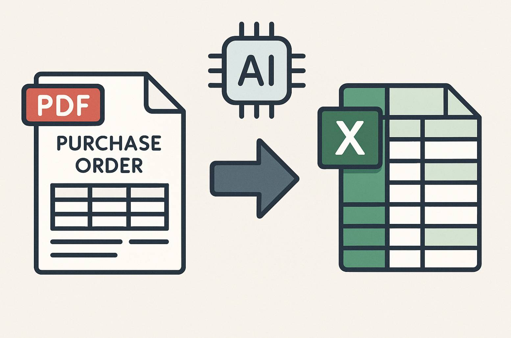
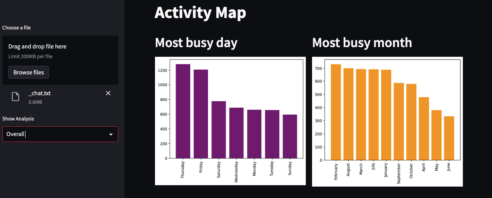

- Served as an IT Mentor and Academic Mentor at the Department of Computer Science and Engineering at IUBAT from November 2019 to April 2022.
- Invited to speak at my university on a variety of machine learning algorithms, showcasing my passion for the field and ability to communicate complex technical concepts to diverse audiences of students and faculty.
Projects
Telecommunication Commission prediction
A machine learning system that predicts commission values for telecommunication products using historical data. Implements a complete ML pipeline with data versioning, experiment tracking, workflow orchestration, and containerized deployment.
Python
DVC
MLFlow
Docker
FastAPI
Prefect

End-to-End Fraud Detection
Production-level fraud detection system for digital transactions. Modular code for ingestion, validation, transformation, model training, evaluation, and real-time prediction.
Python
Pandas
Scikit-Learn
Plotly
Streamlit
Truck Fleet Evaluation System
This project delivers an automated, data-driven solution for evaluating a fleet of trucks. The system recommends whether each truck should be kept, sold, or inspected based on a comprehensive analysis of financial, maintenance, operational, and resale data. The goal is to support fleet managers in making informed, daily decisions that optimize costs and maximize value.
Python
Pandas
PyExcel

PDF to Excel Processing Tool
A smart automation tool that extracts data from purchase order PDFs and automatically fills Excel templates. This tool saves hours of manual data entry by using AI to read PDF documents and populate structured Excel files.
Python
Gimini API
PyExcel

WhatsApp Chat Analysis
Analyze WhatsApp group chat data for message patterns, word usage, and group engagement. Visualizes activity with monthly and weekly graphs.
Python
Pandas
Matplotlib
Seaborn
nltk
Streamlit